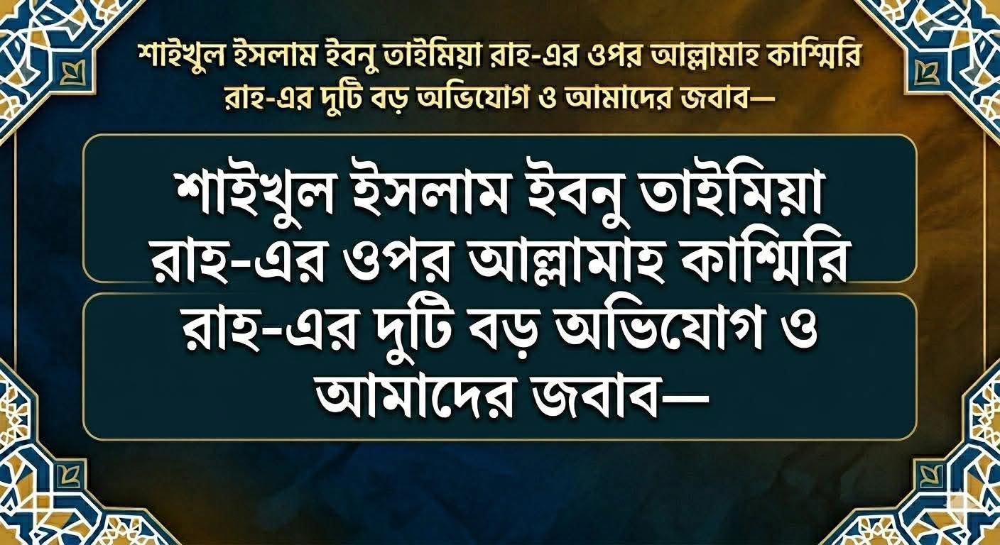

শাইখুল ইসলাম ইবনু তাইমিয়া রাহ.-এর ওপর আল্লামাহ কাশ্মিরি রাহ.-এর দুটি বড় অভিযোগ ও আমাদের জবাব
১০ জুন, ২০২৬

যারা বাস্তবতা তালাশ করবে, তারা দেখবে যে— ইবনু তাইমিয়া রাহিমাহুল্লাহর ওপর এমন অনেক অভিযোগ আনা হয়, যা তিনি কখনো বলেন নি বা করেনও নি। সম্পূর্ণ ভুল তথ্য ও মিথ্যাচারের ওপর ভিত্তি করেই অভিযোগ করা হয় অধিকাংশ ক্ষেত্রে।
দুঃখজনক হলেও বাস্তব যে, শাহ কাশ্মিরি রাহ. এ কাজটিই করেছেন। যেমন:
🚫 প্রথম অভিযোগ
❝শাইখুল ইসলাম রাহ. সৃষ্টির ন্যায় আল্লাহর জন্য ‘দিক’ সাব্যস্ত করে তাশবিহ দিয়েছেন।❞
এ অভিযোগ উত্থাপন করে কাশ্মিরি রাহ. বললেন—
قال ابن تيمية: من أنكر الجهة في حق الله تعالى فقد أنكر وجوده. قلت: (الكشميري): ويا للعجب ويا للأسف كيف سوى أمر الممكن والواجب؟ أما كان له أن ينظر أن من أخرج العالم كله من كتم العدم إلى بقعة الوجود كيف تكون علاقته معه كعلاقة سائر المخلوقات؟ فإنَّ الله تعالى كان ولم يكن معه شيء، فهو خالق للجهات. والغلو في هذا الباب يُشبه القول بالتجسيم، والعياذ بالله أن نتعدى حدود الشرع.
ফায়যুল বারী, ৬/৫৬৩
‘ইবনু তাইমিয়া রাহ. বলেছেন— যে ব্যক্তি আল্লাহর জন্য দিক অস্বীকার করল, সে আল্লাহর অস্তিত্বকেই অস্বীকার করল। আমি (কাশ্মীরী) বলি, কী আশ্চর্য, তিনি কীভাবে সৃষ্টি ও স্রষ্টার বিষয়টি একাকার করে ফেললেন!? উনার এটা ভাবা উচিত ছিল যে, যিনি সমস্ত বিশ্বকে অস্তিত্বহীন ও শূন্য থেকে অস্তিত্বে এনেছেন, তিনি কীভাবে অন্যান্য সৃষ্টির পরস্পর সম্পর্কের মতো নিজেও সেভাবে সম্পর্কিত হবেন!! নিশ্চয় আল্লাহ তাআলা তখন ছিলেন, যখন তাঁর সাথে কিছুই ছিল না। অতঃপর তিনি সকল দিকের সৃষ্টিকারী। এ বিষয়ে বাড়াবাড়ি মূলত দেহবাদের বক্তব্যের সাদৃশ্য হয়ে থাকে। আমরা শরীয়তের সীমালঙ্ঘন করা হতে আল্লাহর নিকট আশ্রয় কামনা করছি।’
✅ জবাব
من أنكر الجهة في حق الله تعالى فقد أنكر وجوده.
“যে ব্যক্তি আল্লাহর জন্য দিক অস্বীকার করল, সে আল্লাহর অস্তিত্বকেই অস্বীকার করল” — এরকম কোনো বক্তব্য শাইখুল ইসলাম রাহ. থেকে প্রমাণিত নয়। এটি সম্পূর্ণ ভিত্তিহীন ও মিথ্যাচার।
ইবনু তাইমিয়া কোথাও এ কথা বলেন নি। বলা অসম্ভব। কেননা তাঁর মতে ‘দিক বা জিহাত’ কোরআন হাদিসের কোনো শব্দ নয়; নবসৃষ্ট শব্দ। সুতরাং তা ব্যাখ্যাসহ ব্যবহার করতে হবে। উদ্দেশ্য সঠিক হলে ব্যবহার সঠিক। উদ্দেশ্য গলত হলে ব্যবহারও গলত বিবেচিত হবে। যেমন, শাইখুল ইসলাম রাহ. বলেন—
يقال لمن نفى الجهة: أتريد بالجهة أنها شيء موجود مخلوق، فالله ليس داخلاً في المخلوقات. أم تريد بالجهة ما وراء العالم، فلا ريب أن الله فوق العالم بائن من المخلوقات. وكذلك يقال لمن قال: إن الله في جهة: أتريد بذلك أن الله فوق العالم، أو تريد به أن الله داخل في شيء من المخلوقات، فإن أردت الأول فهو حق، وإن أردت الثاني فهو باطل.
মাজমুউল ফাতাওয়া, ৩/৪২; আত্তাদমুরিয়্যাহ, ৬৬–৬৭
“যে ‘দিক’ অস্বীকার করে, তাকে বলা হবে, ‘দিক’ দ্বারা তুমি কি অস্তিত্বশীল কোনো সৃষ্ট বস্তু উদ্দেশ্য করে থাকো? তবে (জেনে রাখো) আল্লাহ মাখলুকাতের অভ্যন্তরে নেই। না কি তুমি ‘দিক’ দ্বারা জগতের বাহির বুঝাচ্ছো? তবে নিঃসন্দেহে আল্লাহ জগতের ওপরে সৃষ্টিকূল থেকে পৃথক। একইভাবে যে ‘আল্লাহ কোনো এক দিকে আছেন’ দাবি করে, তাকে জিজ্ঞেস করা হবে, আপনি কি এর দ্বারা আল্লাহকে আরশের ওপরে বুঝাচ্ছেন, না-কি আপনি বুঝাচ্ছেন আল্লাহ কোনো মাখলুকাতের অভ্যন্তরে প্রবেশ করেছেন? যদি প্রথমটি বোঝিয়ে থাকেন, তবে তা হক-সত্য। আর দ্বিতীয়টি বুঝালে তা বাতিল-ভ্রান্ত।”
দেখুন কত চমৎকারভাবে ‘দিক’ সাব্যস্ত ও নাকচ করার বৈধ ও অবৈধ সূরাত দেখিয়ে দিয়েছেন তিনি। যেখানে সৃষ্টির সঙ্গে তাশবিহের নাম-গন্ধও নেই। এ ব্যাপারে তাঁর আরও অনেক বক্তব্য রয়েছে, সবগুলোর সারাংশ এটিই।
শাইখুল ইসলাম রাহ. যেখানেই আল্লাহর সিফাত সাব্যস্ত করেছেন, সেখানে স্পষ্ট করে তাশবিহ-সাদৃশ্য ও তামসিল-উপমা নাকচ করেছেন। তাহলে তিনিই আবার তাশবিহ দেবেন, কীভাবে সম্ভব?! কাশ্মিরি রাহ.-এর দেয়া উদ্ধৃতি যে ভিত্তিহীন, তা আর বলার অপেক্ষা রাখে না।
🚫 দ্বিতীয় অভিযোগ
❝ইবনু তাইমিয়া রাহ. আল্লাহর নুযুল বা অবতরণকে নিজের অবতরণের সঙ্গে তুলনা দিয়ে দেহবাদের দিকে ঝুঁকেছেন।❞
এ অভিযোগ করে আল্লামাহ কাশ্মিরি রাহ. বলেন—
كُنْتُ سَمِعْتُ مِنْ حَالِهِ، أَنَّهُ كان جالساً على المِنْبَرِ، فَسَأَلَهُ سَائِلٌ عن نُزُولِهِ تعالى، فَنَزَلَ ابن تيمية إلى الدرجة الثانية، فقال: هَكَذَا النُّزُولَ، فَحَقَّقَهُ في الخارج، وبالغ فيه، حتى أَوْهَم كلامُهُ التَّشْبِيه.
ফায়যুল বারী, ৬/৪০৫
“ইবনু তাইমিয়ার অবস্থান সম্পর্কে শুনেছিলাম যে— একদা তিনি মিম্বরে বসে ছিলেন। এক ব্যক্তি তাঁকে আল্লাহর নুযুল সম্পর্কে জিজ্ঞাসা করল। তখন তিনি মিম্বরের দ্বিতীয় ধাপে অবতরণ করে বললেন, ‘এইভাবে অবতরণ।’ তিনি বিষয়টিকে এতটা বাস্তবভাবে উপস্থাপন করে অতিরঞ্জন করেছেন যে, তাঁর কথা থেকে আল্লাহর সাদৃশ্যের ধারণা চলে আসে।”
✅ জবাব
মূলত এ ঘটনা সরাসরি ইবনু তাইমিয়া রাহিমাহুল্লাহ থেকে বর্ণনা করেছেন পর্যটক ইবনু বতুতা। (কিতাব: রিহলাতু ইবনি বতুতা—৪৩)
কিন্তু বাস্তবতা হল, এটি কোনো নির্ভরযোগ্য ইতিহাসগ্রন্থ নয়। তার কিতাবের নানান আজিব-গরিব, খুরাফাত ও মিথ্যাচার নিয়ে মুহাক্কিক আলেমগন সমালোচনা করেছেন। আরও ফ্যাক্ট চেক করে দেখা গেছে যে, ইবনু বতুতা যখন দিমাশকে প্রবেশ করেন, তখন ইবনু তাইমিয়া দিমাশকের কেল্লায় বন্দি ছিলেন।
খুদ ইবনু বতুতার বয়ানে এসেছে যে, তিনি দিমাশক প্রবেশ করেন ৭২৬ হিজরির নবম রমজান। আর শাইখুল ইসলাম রাহ. বন্দি হন ৭২৬ হি. শাবান মাসে (অর্থাৎ ইবনু বতুতা প্রবেশের প্রায় ১ মাস পূর্বে)। আর এ বন্দি হালতেই ইন্তেকাল করেন ৭২৮ হিজরিতে। জায়লু তাবাকাতিল হানাবিলাহ, ৪/৫২৫
তাহলে ইবনু বতুতা কীভাবে ইবনু তাইমিয়ার সাক্ষাৎ পেলেন? এ থেকে প্রমাণ হয়— এ ঘটনা শাইখুল ইসলামের নামে সম্পূর্ণ মিথ্যাচার বৈ কিছু নয়।
শাইখুল ইসলামের দ্ব্যর্থহীন বক্তব্য—
استوى عَلَى الْعَرْشِ حَقِيقَةً؛ لَكِنْ بِلَا تَكْيِيفٍ وَلَا تَشْبِيهٍ.
মাজমুউল ফাতাওয়া, ৩/২১৭
“তিনি (আল্লাহ) বাস্তবিকভাবে আরশের ওপরে সমুন্নত হয়েছেন। কোনো ধরন কিংবা সাদৃশ্য নির্ধারণ ব্যতিরেকে।”
এরকম অগণিত জায়গায় তিনি তাশবিহ-সাদৃশ্য, তামসিল-উপমা, তাকইফ-ধরন নাকচ করেছেন। ইনশাআল্লাহ, ইমামুনা ইবনু তাইমিয়া রাহ. তাশবিহ-সাদৃশ্য ও তাজসিম-দেহবাদ থেকে সম্পূর্ণ মুক্ত।
কিন্তু নানান ভুলভাল তথ্য ও মিথ্যাচারের ওপর ভিত্তি করে অন্যদের মতো আল্লামাহ কাশ্মিরিও অভিযোগ তুলেছেন। আল্লাহ তাঁকে ক্ষমা করুন। অবশ্য, অনেক ক্ষেত্রে তিনি আশআরি-মাতুরিদিদের বিপক্ষে দাঁড়িয়ে ইবনু তাইমিয়ার আকিদাহ সমর্থন করেছেন। রাহিমাহুমাল্লাহু রাহমাতান ওয়াসিয়াহ।